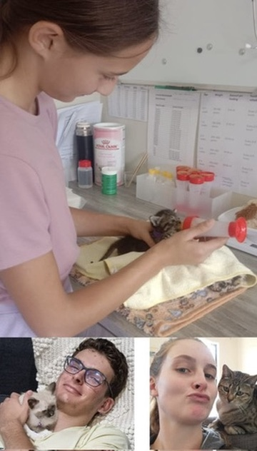
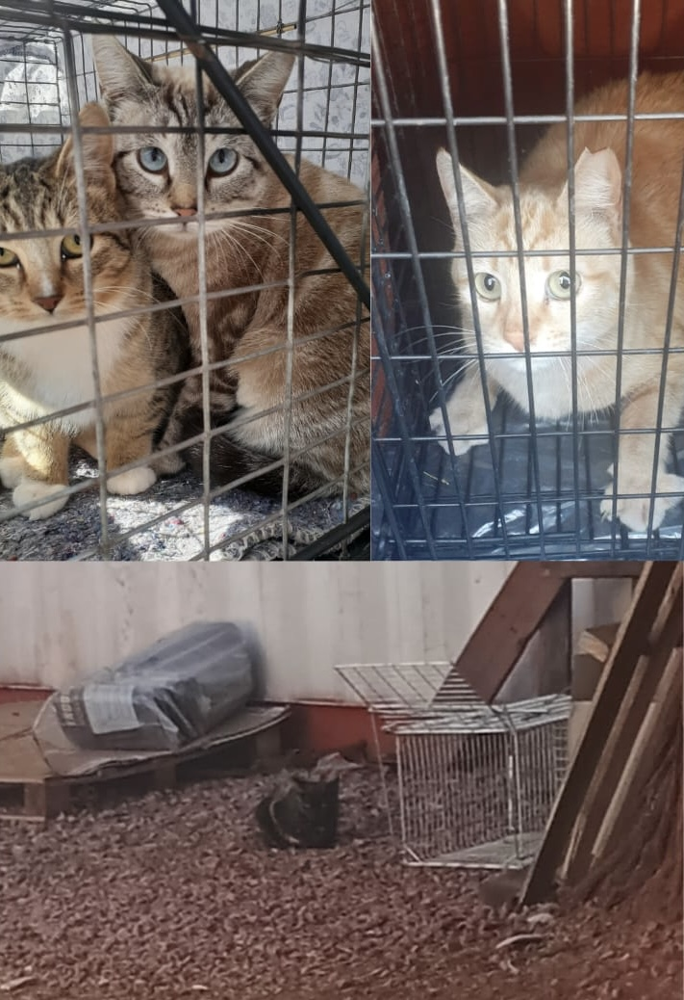

A real problem. A genuine commitment.
A neonatal kitten rescue and TNR programme based in Kathu, Northern Cape — helping cats, kittens, and other animals in need since 2022.
Volunteer-driven, locally rooted
Kathu Cats & Kitten Rescues is a registered Non Profit Company (NPC) based in Kathu, Northern Cape, governed by a Board of Directors and driven by a team of dedicated volunteers. We have a small physical base where cats in care are housed, and no paid staff.
The work covers everything: picking up injured kittens and feral cats, transporting animals to the vet, managing feeding colonies, coordinating adoptions, and funding much of it out of pocket. It is unglamorous, time-consuming, and expensive. It continues anyway.


The problem that forced the decision
Kathu's population is largely transient — the town exists around the mines, and people come and go with contracts. When families leave, pets are frequently left behind. Some are abandoned in houses, some are released onto the street, some are handed to neighbours who already have too many animals to care for.
The result is a compounding stray and abandoned cat population with no mechanism for control. Cats breed, kittens suffer, injuries go untreated, and the cycle continues. There are no shelters. No municipal welfare services equipped to address it. No organisation with the infrastructure or funding to step in systematically.
Kathu Cats started because a few people reached a point where they could not justify not acting. That is still the reason it continues.
Philosophy
Humane treatment, always
Every animal that comes into our care is treated with dignity. That means proper medical attention, appropriate shelter, and decisions made in the best interest of the animal — not what is easiest or cheapest.
Sterilisation first
Sterilisation is the only intervention that actually reduces long-term suffering. Every cat we sterilise is a future litter of suffering that does not happen. It is not glamorous, but it is the work that matters most.
Community responsibility
Animal welfare in Kathu is a community issue. We work with residents, educate where we can, and try to shift the culture around pet ownership and animal abandonment. The problem is shared — so must the solution be.
We are honest about what this is
Kathu Cats is not profit-driven. It is not even break-even. The costs of veterinary care, sterilisation, food, medication, and transport consistently exceed what comes in through donations. The shortfall is absorbed by volunteers — through their time, their vehicles, and their own money.
Donations do not go to administration, salaries, or overhead. They go directly to the animals: vet bills, sterilisation procedures, emergency care, food for cats in foster care, and supplies. Every rand received is used for exactly that purpose.